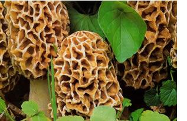
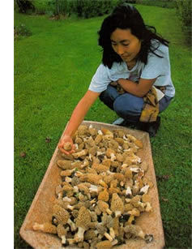
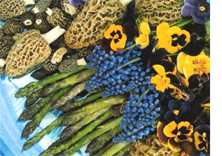
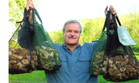

Mushroom hunting can be a wonderful, healthy outdoor experience to share with family and friends. But the thrill of the hunt is only half the enjoyment. Its deliciously earthy, nutty, steak-like flavor makes the morel mushroom the No. 1 target of wild mushroom hunters across North America.
The two dozen choicest wild mushrooms on this continent have a range of flavors - light, sweet apricot (chanterelle), eggplant (puffball), meat like (several) - but the morel is king. Thousands of people scour fields and forests annually in North America in search of morels.
Not only is it the best-tasting, the morel is also the easiest to identify and safest to eat of all wild mushrooms. Generally, if you find a sponge-like protuberance, 1 to 6 inches tall pushing skyward among fallen forest leaves and grasses on spring days between 60 and 80 degrees, you're in luck. The stems and caps of morels are hollow, and the stem is attached at the base of the cap. It makes a great first mushroom to learn because its spongy shape is so distinctive and easy to identify.
Morels appear throughout the continent in spring. Trees are just beginning to bud, so relatively unfiltered sunlight warms the earth directly. This trigge rs the appearance of a number of wildflowers: trillium, phlox, trout lily, Dutchman's breeches, violets, wild strawberries and many more. These flowers, along with temperature, are indicators of when to look for morels.
The "where" isn't quite as simple. Where the spores fall, cross pollinate and germinate is basically where morels will grow - after a five-year cycle of nutrient-gathering and storage. Black morels (which appear first) tend to be more exclusively in hardwood forests, but not around any particular type of tree. Finding them is often like a connect-the-dots game. When you find one, be still and look nearby. When the spores that created the morel you just picked were jettisoned years ago, there likely was a wind pattern that blew the spores in a particular path. There may have been a nutrient source or environment (soil type, moisture, pH, etc.) that was conducive for growth. Look for the patterns.
White morels, which appear later than the blacks Forests, fields, orchards, fence rows, hedgerows, islands, railroad tracks, floodplain's and grown-over strip mines are just some of the places the white and giant morels can be found. Unlike the blacks, the whites sometimes tend to congregate around certain types of tree usually ones that are in some stage of dying. Elm, ash, sycamore, cottonwood. Bigger, older trees. As the trees die the root systems break down and are desirable and readily available food sources for morels. This availability of nutrients may allow the growth cycle to advance, shortening the five-year cycle. Good results occasionally can be found in consecutive years in the same location.
When you head out to the woods, wear long pants and a long-sleeved shirt for protection. There can be brambles and poison ivy, the occasional spider web and weather elements to consider. Make sure your clothes and your walking shoes are comfortable. A compass, whistle (for hailing), drinking water and snack are all good accompaniments for your walk.
The most important item, however, is your collection bag. Do not use paper or plastic bags, even though they're handy and inexpensive. These bags don't allow mushroom spores to return to their natural habitat. A mesh bag will keep your mushrooms fresh and let those thousands of spores fall back to the ground. The numbers of morels (where they've previously existed) have steadily dwindled over the past 30 years. Deforestation and pesticide use are partial culprits, but the biggest factor has been human beings removing the "seeds" from the woods in nonporous bags. So use mesh and tell other people why it's important.
The spores are microscopic. The cap of each morel contains 250,000 to 500,000 spores. These spores must become airborne and then find adequate nutrients, soil and moisture. The odds of successful reproduction are slim, but people can help the process by using mesh bags for their "catch."
Recycled orange and onion bags are OK but can abrade the edges of your mushrooms. Some people use well-vented baskets. Over the years I've developed an ideal collection bag, the Spore Boy bag, made of soft-yet-sturdy nylon mesh with belt loops, comfortable handles and a self-storing pouch. It doesn't matter which type of collection vessel you use, as long as the spore gets spread.
Though many other mushrooms (shiitake, buttons, reishi, oyster, etc.) can be grown predictably in one's house or yard from kits, morel technology is elusive. I have purchased, analyzed and tried every kit I have found, and my success rate for growing morels is zero. Over the years I've talked to thousands of people who bought and tried the kits. Only a fraction had any success, and most of those results were questionable. A mesh bag while you're picking is the best kit. Plant as you walk; the spores are free.
Finding morels in nature is challenging, rewarding fun. Get out there with your family and friends, enjoy the sights, sounds and flavors of the outdoors in spring-and happy hunting.
The easiest, longest-lasting method of preserving morels is drying. Place your unwashed, young, healthy specimens (whole or cut in half) on a nonmetal screen directly in the sunshine and raised off the ground for air flow. Hard or reflective surfaces (like a deck or driveway) below your screen will help dry the mushrooms more quickly. Set them out early in the morning. Remove mushrooms before sundown. The process usually takes eight to 10 hours, depending on conditions. Place completely dry morels in paper bags to store. If you keep them dry, they'll last for years.
Morels also can be frozen. In a frying pan, saute onions or garlic in butter or oil. Add mushrooms and sweat or half-saute them over high temperature. The liquid from the morels will create a soup. Remove from heat, cool, put in plastic, resealable bags and freeze. To re-use, put the frozen mixture into a hot frying pan and finish the sauté.
Morel expert Larry Lonik loves to share his passion and expertise with mushroom hunters, cooks and lovers of the great outdoors. His latest book is Basically Morels: Mushroom Hunting, Cooking, Lore and Advice. He offers mesh bags for collecting and an entertaining 35-minute video about hunting for morels on his Web site.
Other Web sites for more about morels include:
www.morelmushroomhunting.com
www.morelmania.com
www.morelsandmore.com
Author of four books about mushrooms, Larry Lonik has been featured on "CBS News Sunday Morning," quoted in The Wall Street Journal and interviewed on National Public Radio.
|
 DAVID CAVAGNARO Fun to find and a treat to eat, it's hard to beat morel mushrooms. |
 DAVID CAVAGNARO On a good day you, too might harvest a bumper crop of morel mushrooms like this one. |
 DAVID CAVAGNARO Morel harvest coincides happily with other harbinger of spring: fresh asparagus. |
|
 COURTESY BOB TREEMORE Author Larry Lonik demonstrates the mesh bags that allow morel spores to escape and spread as the harvester walks, ensuring future harvests. |
|
|